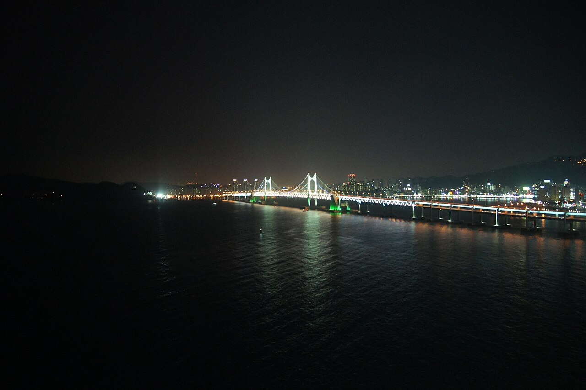
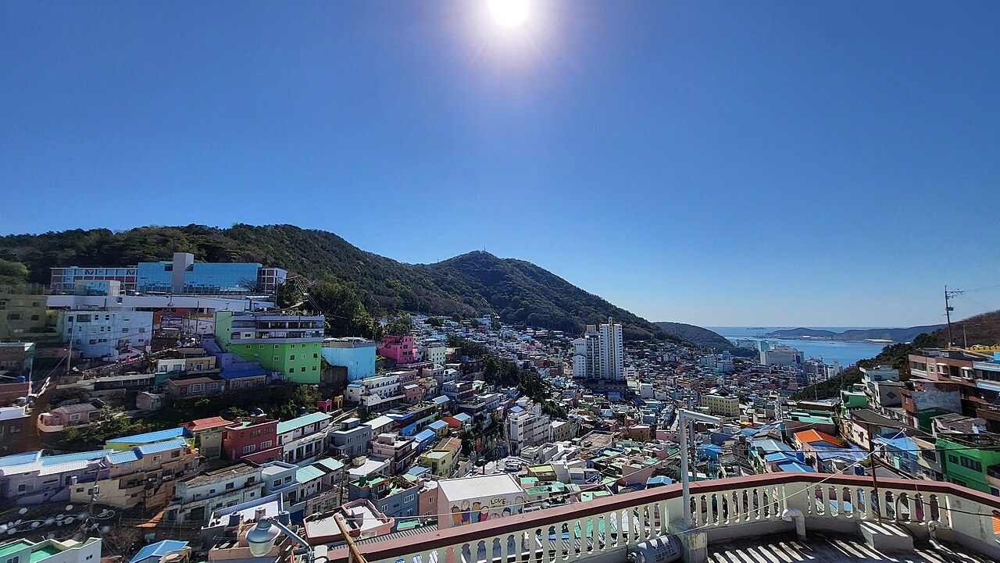
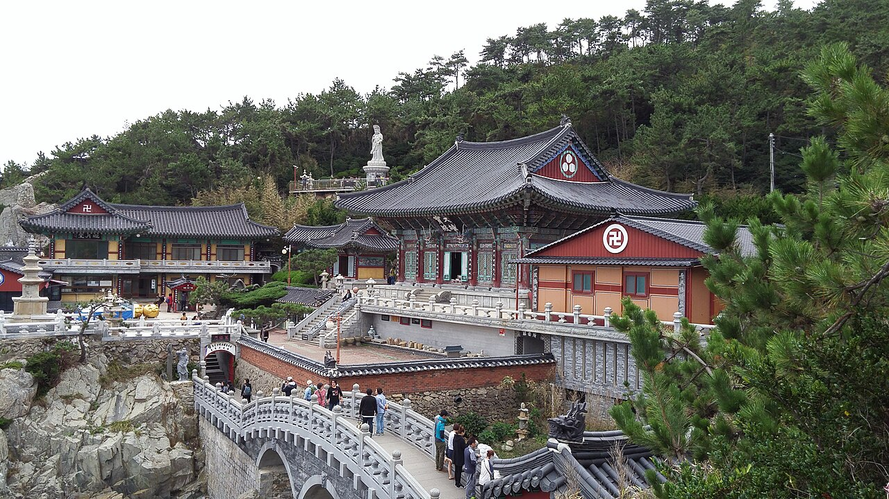

Praia de Haeundae
A praia mais famosa da Coreia, com areia clara, mar calmo e uma orla cheia de restaurantes, cafés e eventos durante o verão.
Saiba maisSua próxima viagem
Busan é a segunda maior cidade da Coreia do Sul e um dos destinos mais encantadores do país. Com praias famosas, templos à beira-mar, mercados de peixe movimentados e bairros cheios de cores, a cidade mistura tradição e modernidade de um jeito único.

De praias urbanas a vilas coloridas nas encostas, Busan oferece experiências para todos os gostos. Separamos três lugares que você não pode deixar de visitar:
A praia mais famosa da Coreia, com areia clara, mar calmo e uma orla cheia de restaurantes, cafés e eventos durante o verão.
Saiba mais
Conhecida como a "Machu Picchu de Busan", a vila tem casinhas coloridas, ruelas cheias de arte e mirantes com vista para o mar.
Saiba mais
Um raro templo budista construído sobre as rochas à beira do oceano, especialmente bonito ao nascer do sol.
Saiba mais